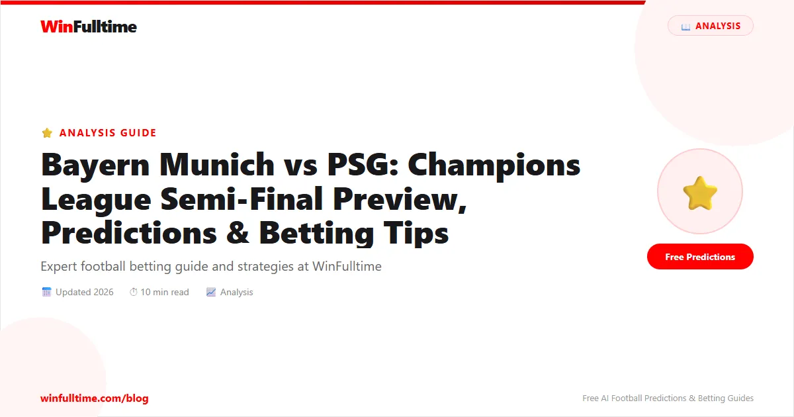

Bayern Munich vs PSG: Champions League Semi-Final Preview, Predictions & Betting Tips

The Allianz Arena braces for a European night of pure theatre. Bayern Munich host Paris Saint-Germain in the second leg of their Champions League semi-final on Wednesday, May 6, 2026. PSG hold a slender 5-4 aggregate lead after a breathless first leg in Paris, leaving everything to play for in Munich.
Date: Wednesday, May 6, 2026
Venue: Allianz Arena, Munich
Kick-off: 20:00 CEST (3:00 PM ET)
Competition: UEFA Champions League Semi-Final (2nd Leg)
TV: Paramount+, CBS
The Stakes: PSG Hold Slender Advantage After Goal Fest in Paris
The first leg at the Parc des Princes was a Champions League classic — a 5-4 thriller already being hailed as one of the greatest semi-finals in the competition's modern history. Khvicha Kvaratskhelia struck twice, Ousmane Demb�l� scored twice including a penalty, and Jo�o Neves also found the net for PSG. Harry Kane, Michael Olise, Dayot Upamecano, and Luis D�az replied for Bayern in a match that saw nine goals and relentless end-to-end action.
With no away goals rule in effect since 2022, Bayern simply need to win by any margin to force extra time and potentially penalties. A draw or defeat eliminates the Bavarians; PSG require only a draw to defend their European crown and reach the final in Budapest.
Bayern Munich: Fortress Allianz Arena Awaits
Team News & Predicted Lineup
Out: Serge Gnabry (thigh), Sven Ulreich (adductor), Rapha�l Guerreiro (hamstring), Tom Bischof (calf)
Doubtful: Lennart Karl (thigh)
Bayern welcome back head coach Vincent Kompany to the touchline after he served a one-match suspension incurred from his third yellow card against Real Madrid in the quarter-final. His assistant Aaron Danks steered the ship in Paris, but Kompany's tactical presence returns at a critical juncture.
The Bavarians have already clinched the Bundesliga title with a 16-point margin, affording Kompany the luxury of rotating heavily against Heidenheim last weekend — a match that ended 3-3, underlining both their attacking firepower and defensive vulnerability.
Predicted XI (4-2-3-1):
Neuer; Stanisic, Upamecano, Tah, Davies; Kimmich, Pavlovic; Olise, Musiala, D�az; Kane
Key Player: Harry Kane
The English striker has been nothing short of phenomenal this season, notching 54 goals across all competitions. Kane scored from the penalty spot in the first leg and remains Bayern's talisman. His ability to drop deep, hold up play, and convert chances will be central to Bayern's comeback hopes at the Allianz Arena.
Tactical Outlook
Bayern's 4-2-3-1 system relies on width from Michael Olise and Luis D�az, with Jamal Musiala operating as the creative hub behind Kane. The return of Kompany means a disciplined defensive shape, but the first leg exposed frailties — Bayern conceded five goals and looked susceptible to PSG's rapid transitions. At the Allianz Arena, expect Bayern to dominate possession early and commit numbers forward, knowing a single goal deficit leaves no room for caution.
Paris Saint-Germain: Defending Champions One Step from History
Team News & Predicted Lineup
Out: Achraf Hakimi (hamstring), Lucas Chevalier (hand)
Doubtful: None
Luis Enrique's PSG are bidding to become only the second team in the modern era to successfully defend the Champions League. They rested key attackers — Demb�l�, Kvaratskhelia, and Dou� — in a 2-2 draw against Lorient last weekend, ensuring fresh legs for Munich.
Hakimi's absence is significant. The Moroccan right-back is one of the world's elite in his position, contributing both defensively and in attack. Warren Za�re-Emery is expected to shift to right-back, with Fabi�n Ruiz slotting into midfield alongside Vitinha and Jo�o Neves.
Predicted XI (4-3-3):
Safonov; Za�re-Emery, Marquinhos, Pacho, Mendes; Ruiz, Vitinha, Neves; Dou�, Demb�l�, Kvaratskhelia
Key Player: Khvicha Kvaratskhelia
The Georgian winger was instrumental in the first leg with two goals and will be PSG's primary threat on the counter-attack. With 11 goals in his last 10 games, Kvaratskhelia's direct dribbling and link-up play with Demb�l� could exploit Bayern's high defensive line.
Tactical Outlook
PSG's 4-3-3 thrives on high pressing and lightning-quick transitions. Without Hakimi, their right flank lacks its usual dynamism, but Za�re-Emery's athleticism offers a solid alternative. Enrique will likely set his side up to absorb Bayern's early pressure and strike on the break, knowing a draw suffices. PSG have won six consecutive away games and remain unbeaten on the road in their last nine European outings.
Head-to-Head & Recent Form
| Date | Result | Competition |
|---|---|---|
| Apr 28, 2026 | PSG 5–4 Bayern | UCL Semi (1st Leg) |
| Nov 4, 2025 | PSG 1–2 Bayern | UCL League Phase |
| Jul 5, 2025 | PSG 2–0 Bayern | FIFA Club World Cup |
| Nov 26, 2024 | Bayern 1–0 PSG | UCL League Phase |
Bayern have won seven of the last ten meetings, but PSG's 5-4 triumph last week reversed recent momentum. The first leg produced nine goals — a Champions League semi-final record — and both teams have been averaging well over 3.5 goals per game in recent fixtures.
Betting Odds & Market Analysis
| Market | Odds |
|---|---|
| Bayern Win (90 min) | -148 to -163 |
| Draw | +395 to +445 |
| PSG Win (90 min) | +290 to +320 |
| Over 4.5 Goals | +115 |
| Under 4.5 Goals | -145 |
| Over 3.5 Goals | -200 |
| Both Teams to Score – Yes | ~1.25 (-400) |
The sportsbooks have set the total goals line at a remarkable 4.5, reflecting the attacking quality and defensive frailties on both sides. Over 2.5 goals is priced at a prohibitive -500, indicating how inevitable goals appear in this fixture.
Expert Betting Picks
1. Both Teams to Score – YES @ 1.25
Both sides possess elite attacking depth and have conceded regularly in recent weeks. The first leg delivered goals at both ends; expect the same in Munich. This is a high-confidence play backed by both teams' recent form.
2. Over 3.5 Goals @ 1.53
Bayern have seen over 3.5 goals in 9 of their last 11 matches across all competitions. PSG matches average 3.0 goals on the road. With the first leg producing nine, another high-scoring affair is probable. The line at 4.5 is tempting, but 3.5 offers better value with strong backing.
3. PSG +0.75 Asian Handicap @ +102
PSG only need a draw to advance. With Hakimi out, Bayern are heavy favorites, but the Parisians' midfield trio of Vitinha, Ruiz, and Neves matches up well against Kimmich and Pavlovic. This bet wins if PSG draw or win, and only half the stake is lost if Bayern win by a single goal.
4. Khvicha Kvaratskhelia to Score or Assist @ +100
The Georgian wizard has been in scintillating form with 11 goals in his last 10 games. He enjoys operating in the half-spaces against Bayern's high line and links superbly with Demb�l� and Dou�.
5. Correct Score: Bayern 3–2 PSG @ 12.00
A high-scoring Bayern win mirrors the pattern of recent fixtures. Bayern's home dominance (averaging 3.94 goals per game at Allianz Arena) combined with PSG's attacking threat makes a 3-2 outcome plausible — sending the tie to extra time at 7-7 on aggregate.
Final Verdict
This semi-final second leg promises another night of end-to-end drama. Bayern's home fortitude and Kompany's return tip the scales slightly in their favor, but PSG's counter-attacking precision and the cushion of a draw make them dangerous underdogs.
Our Final Prediction
Bayern Munich 3–2 PSG (7–7 aggregate, extra time/penalties likely)
Best Value Bet: PSG +0.75 Asian Handicap @ +102
Goals Bet: Over 3.5 Goals @ 1.53